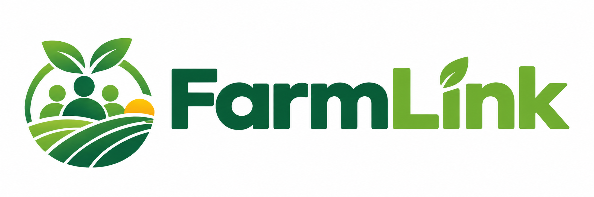

Trade with a clearer signal.
See pooled demand before you harvest. Bring the right amount to market and build every season on insight, not instinct.
For farmers ↗
FarmLinkA better way to trade fresh produce
FarmLink brings farmers and buyers into one transparent marketplace. Pool demand, plan supply, and move better produce with less uncertainty.
Built for real market days.
Join farmers, retailers and buyers trading with clarity.
THIS WEEK'S HARVEST
Kano · closes in 18 hours
Made for the people who keep food moving
Less guesswork. More good food.
From farm to shop floor, FarmLink makes every stage easier to plan. Farmers contribute to live pools, buyers reserve what they need, and everyone sees progress in real time.
Explore the platformSee pooled demand before you harvest. Bring the right amount to market and build every season on insight, not instinct.
For farmers ↗Lock in quality produce from verified pools and keep an eye on fulfilment as the market comes together.
For buyers ↗Transparent pool progress and fair, traceable payouts make every successful trade work harder for the whole community.
Our approach ↗Market, made visible
Kano · 1,480 kg remaining
Kebbi · 96 bags remaining
Ogun · closes today
kg of produce
pooled monthly
faster from pool
to purchase
of payouts made
on schedule
growing regions
on FarmLink
Good food should be good business for everyone.
Community first
“FarmLink gives us a way to plan with buyers before the harvest is in our hands. That changes everything.”
Chinwe Okafor
Co-op lead, Enugu
Ready when you are